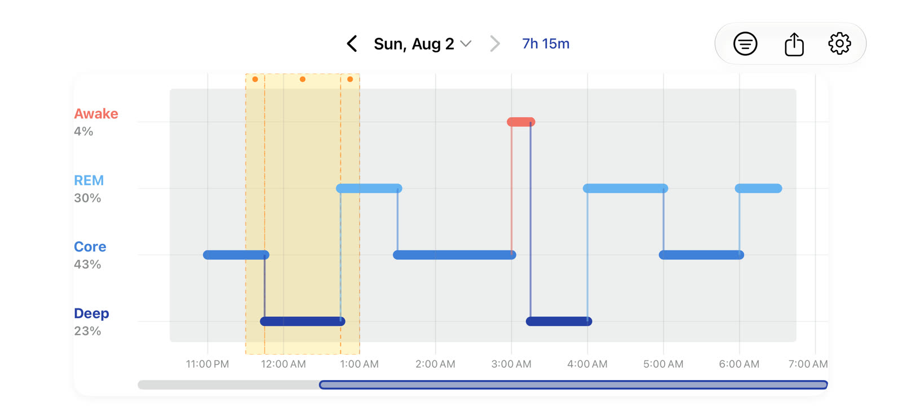

See SleepDaddy in Motion
A single unedited recording of the app running end to end — zooming a night's timeline, inspecting one interval, moving between nights, filtering by HealthKit source, adjusting night boundaries, and exporting a timeline card.
Download the MP4 · 71 seconds · no audio
What the recording shows
In order, without cuts:
- A full night at a glance. The stepped timeline draws every Awake, REM, Core, and Deep interval across the night, with the date and total sleep in the header.
- Inspecting one interval. Tapping an interval opens its details — stage, exact clock range, duration, and the HealthKit source, bundle identifier, and device model the sample came from.
- Pinch to zoom. The timeline zooms continuously under a pinch; the time axis relabels as the viewport narrows.
- Panning across the night. Dragging scrolls the zoomed viewport, with the scrub bar underneath showing the position within the whole night.
- Moving between nights. The chevrons step back to the two previous nights and forward again.
- Filtering by HealthKit source. The filter sheet lists every source that contributed sleep data. Selecting Apple Watch restricts the timeline to that source; clearing it returns to all sources. The same sheet holds the brief-awake toggle, which hides awake periods of a minute or less without changing sleep totals.
- Adaptive night boundaries. Settings exposes the core night window that decides where one night ends and the next begins, so late nights and shift patterns stay a single session.
- Sharing a timeline card. The share button renders the night to an image and hands it to the standard iOS share sheet. Nothing is sent anywhere by the app itself.
Sample Data, Real App
This was recorded on an iOS Simulator, where the app is backed by a built-in fixture instead of HealthKit — the simulator has no Apple Watch to record sleep. Everything on screen is the shipping app's own rendering, gesture handling, and layout code; only the sleep samples are synthetic. They describe one representative night, and the fixture repeats that same night for every date, which is why the timeline shape does not change as the recording steps between nights.
On a real device the identical screens are driven by HKCategoryTypeIdentifierSleepAnalysis samples read from HealthKit. If a device has no recorded sleep, the app shows an explanatory empty state rather than any of the above.
Strictly Read-Only
The app requests read access to sleep analysis only, and never writes to HealthKit.
No Account, No Network
There is no sign-in and no server. Preferences live in local UserDefaults.
Unedited
One continuous take. Nothing is sped up, cut together, or re-staged.
Landscape
The app supports both orientations. Rotating mid-recording would have produced a sideways segment — a screen recording keeps the display's native orientation — so the immersive landscape timeline is shown here as a full-resolution capture instead.

Prefer to Drive It Yourself?
The interactive timeline on the home page runs the same stage rendering in the browser, and the TestFlight beta puts the real app on your own HealthKit data.
Requires iOS 18.0 or later. Completely free during public beta.